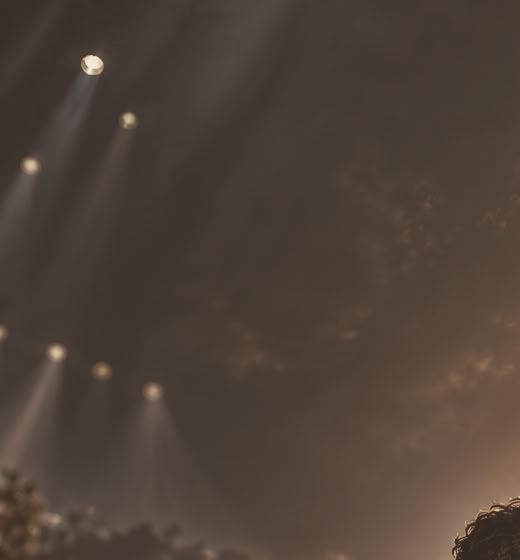
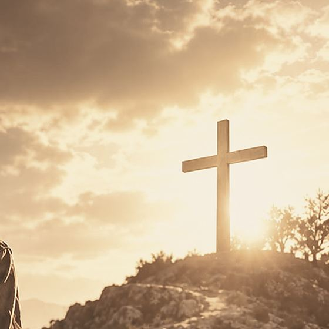

dag 1 · de rugzak staat klaar
Een nieuwe musical Voorbeeld
On the Way
Een voorbeeldverhaal over een jonge reiziger, een lange weg omhoog en de hoop die onderweg groeit.
- Wanneer
- Nog bekend te maken
- Waar
- Nog bekend te maken
- Voor wie
- Nog bekend te maken
lampen?! alsof iemand de hemel belicht
daarboven: het kruis
mijn rugzak · véél te zwaar
etappe 1
Het verhaal
Voorbeeldverhaal-
Dag 1 · Vertrek
De deur valt dicht
Een jonge man pakt zijn rode rugzak en laat het vertrouwde achter zich. Hij weet niet precies waar de weg naartoe leidt, alleen dat hij moet gaan.
wat neem je mee, als je niet weet hoe ver het is?
-

Dag 4 · Onderweg
Vreemden, liedjes, twijfel
Onderweg ontmoet hij mensen die hem iets meegeven: een lied, een vraag, een hand op zijn schouder. Twijfel en hoop lopen een eind met hem op.
vannacht leek de hemel wel een podium
-

Dag 9 · De top
Een plek om stil te staan
Bovenaan wacht geen antwoord in grote letters, maar een plek om stil te staan. Een verhaal over geloven dat de weg zelf de moeite waard is.
één stap is genoeg om te beginnen
Voorbeeldtekst · de dagnummers horen bij het voorbeeldverhaal, het definitieve verhaal volgt later.
Pelgrimspas
On the Way
voorbeeld · geen geldig document
etappe 2
Reserveer je plek op de weg
De kaartverkoop is nog niet geopend. Deze knop laat zien waar reserveren straks begint.
Reserveer ticketsverzamel onderweg een stempel per etappe ↓
- Verhaal
- Praktisch
- Reisgenoten
- Schetsboek
- Wie zijn wij
etappe 3
Praktisch
Voorbeeld- Wanneer
- Nog bekend te maken
- Aanvang
- Nog bekend te maken
- Locatie
- Nog bekend te maken
- Duur
- Nog bekend te maken
- Leeftijd
- Nog bekend te maken
- Prijs
- Nog bekend te maken
paklijst voor de avond
Tik om af te vinken. Puur voor de sfeer, er wordt niets opgeslagen.
etappe 4
Reisgenoten
Cast & makers. Rollen zijn voorbeelden, namen volgen na de audities.
- Regie
- Naam volgt
- Muzikale leiding
- Naam volgt
- Script & liedteksten
- Naam volgt
- Choreografie
- Naam volgt
- Decor & licht
- Naam volgt
etappe 5
Schetsboek
Tik op een beeld om het groter te bekijken.
groeten van onderweg
etappe 6
Wie zijn wij?
Achter On The Way staat een groep makers, spelers en vrijwilligers die samen een voorstelling bouwen over hoop en onderweg zijn.
wie de organisatie precies is, vertellen we binnenkort. (voorbeeldtekst)